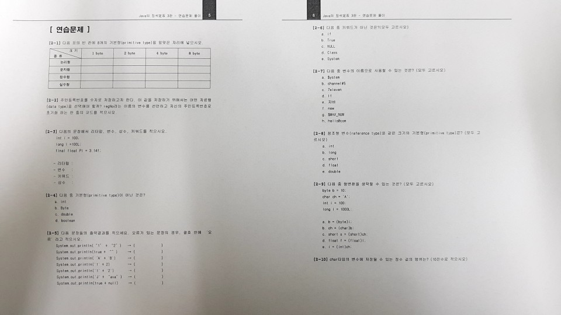

[1월] 0103
1. 변수라는 놈
1) 변수타입 변수명 은 지난시간 복습
2) 타입을 정하지 않는 것은 김치를 줘놓고 김치통이 없는것
3) 변수명을 정하지 않는 것은 김치통이 있으나 김치를 담은적이 없는것
*중요한 박스
|
1byte |
2byte |
4byte |
8byte |
| 논리형 |
boolean |
|
|
|
| 문자 |
|
char |
|
|
| 정수 |
byte |
short |
int |
long |
| 실수 |
|
|
float |
double |
2. 정수의 범위
공식 : - 2^(n-1) ~ 2^(n -1)-1 , 1byte=8bit
여기서는 앞의 부호+,-가 있기에 n-1을 해야한다.
1) byte형 : -2^7 ~ 2^7 -1 / 8bit 이기에 2^8
2) short형 : -2^15 ~ 2^15 -1 / 16bit 이기에 2^16
3) int형 : -2^31 ~ 2^31 -1 / 32bit 이기에 2^32
4) long형 : -2^63 ~ 2^63 -1 / 64bit 이기에 2^64
double 이 float 보다 '정밀'하다고 쓴다.
실수형 데이터 타입은 정수형보다 큰 타입으로 쓴다.(메모리상관x)
3. 연습문제
